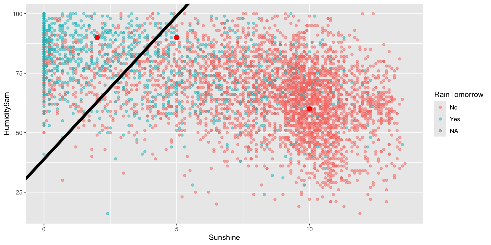
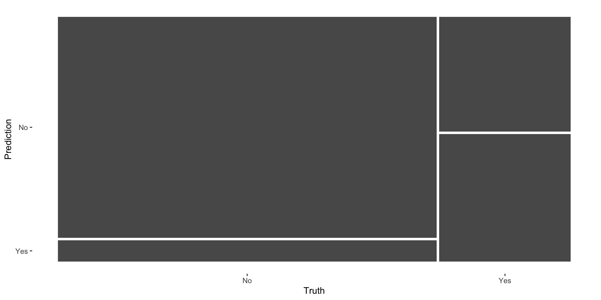

Check Slack for recent messages, including a reminder about tomorrow’s coffee break
Learning Goals
Use a logistic regression model to make hard (class) and soft (probability) predictions
Interpret non-intercept coefficients from logistic regression models in the data context
Notes: Logistic Regression
Where are we?
CONTEXT
world = supervised learning
We want to model some output variable \(y\) using a set of potential predictors (\(x_1, x_2, ..., x_p\)).
task = CLASSIFICATION \(y\) is categorical and binary
(parametric) algorithm
logistic regression
GOAL
Use the parametric logistic regression model to model and classify \(y\).
Logistic Regression Review
Logistic Regression
Let \(y\) be a binary categorical response variable: \[y =
\begin{cases}
1 & \; \text{ if event happens} \\
0 & \; \text{ if event doesn't happen} \\
\end{cases}\]
Further define \[\begin{split}
p &= \text{ probability event happens} \\
1-p &= \text{ probability event doesn't happen} \\
\text{odds} & = \text{ odds event happens} = \frac{p}{1-p} \\
\end{split}\]
Then a logistic regression model of \(y\) by \(x\) is \[\begin{split}
\log(\text{odds}) & = \beta_0 + \beta_1 x \\
\text{odds} & = e^{\beta_0 + \beta_1 x} \\
p & = \frac{\text{odds}}{\text{odds}+1} = \frac{e^{\beta_0 + \beta_1 x}}{e^{\beta_0 + \beta_1 x}+1} \\
\end{split}\]
Coefficient interpretation \[\begin{split}
\beta_0 & = \text{ LOG(ODDS) when } x=0 \\
e^{\beta_0} & = \text{ ODDS when } x=0 \\
\beta_1 & = \text{ unit change in LOG(ODDS) per 1 unit increase in } x \\
e^{\beta_1} & = \text{ multiplicative change in ODDS per 1 unit increase in } x \\
\end{split}\]
Example 1: Check out the data
Code
# Load packageslibrary(tidyverse)library(tidymodels)# Load weather data from rattle packagelibrary(rattle)data("weatherAUS")# Wrangle datasydney <- weatherAUS %>%filter(Location =="Sydney") %>%select(RainTomorrow, Humidity9am, Sunshine)# Check it outhead(sydney)
Suppose there’s 99% humidity at 9am today and only 2 hours of bright sunshine.
What’s the probability of rain?
# log(odds of rain)log_odds <--1.01+0.0260*99-0.313*2log_odds
[1] 0.938
# odds of rain# probability of rain
What’s your binary classification: do you predict that it will rain or not rain?
Solution:
.
# log(odds of rain)-1.01+0.0260*99-0.313*2
[1] 0.938
# odds of rain (MODIFY THIS)exp(-1.01+0.0260*99-0.313*2)
[1] 2.554867
# probability of rain2.554867/ (1+2.554867)
[1] 0.7186955
rain
Example 4: Classification rules (intuition)
We used a simple classification rule above with a probability threshold of c = 0.5:
If the probability of rain >= c, then predict rain.
Otherwise, predict no rain.
Let’s translate this into a classification rule that partitions the data points into rain / no rain predictions based on the predictor values.
What do you think this classification rule / partition will look like?
Code
rain_plot
Solution:
will vary
Example 5: Building the classification rule
If …, then predict rain.
Otherwise, predict no rain.
Work
Identify the pairs of humidity and sunshine values for which the probability of rain is 0.5, hence the log(odds of rain) is 0.
You should also convince yourself of this statement that if the probability of rain is 0.5, then the log(odds of rain) is 0.
Solution:
Set the log odds to 0:
log(odds of rain) = -1.01 + 0.0260 Humidity9am - 0.313 Sunshine = 0
Solve for Humidity9am:
Move constant and Sunshine term to other side.
0.0260 Humidity9am = 1.01 + 0.3130 Sunshine
Divide both sides by 0.026:
Humidity9am = (1.01 / 0.026) + (0.3130 / 0.026) Sunshine = 38.846 + 12.038 Sunshine
Example 6: Examine the classification rule
Let’s visualize the partition, hence classification regions defined by our classification rule:
Code
# Example data pointsexample <-data.frame(Humidity9am =c(90, 90, 60), Sunshine =c(2, 5, 10), RainTomorrow =c(NA, NA, NA))# Include the line Humidity9am = 38.84615 + 12.03846 Sunshinerain_plot +geom_abline(intercept =38.84615, slope =12.03846, size =2) +geom_point(data = example, color ="red", size =3)

Use our classification rule to predict rain / no rain for the following days:
Day 1: humidity = 90, sunshine = 2
Day 2: humidity = 90, sunshine = 5
Day 3: humidity = 60, sunshine = 10
Solution:
Day 1: rain
Day 2: no rain
Day 3: no rain
Example 7: General properties
Does the logistic regression algorithm have a tuning parameter?
Estimating the logistic regression model requires the same pre-processing steps as least squares regression.
Is it necessary to standardize quantitative predictors? If so, does the R function do this for us?
Is it necessary to create dummy variables for our categorical predictors? If so, does the R function do this for us?
Solution:
no
.
no, R doesn’t standardize for logistic.
yes and yes, R does this for us.
Exercises
Work on exercises 1–8 [optional 9–10] with your group.
Pay attention to new terms and concepts!
Goals
Implement logistic regression in R.
Evaluate the accuracy of our logistic regression classifications.
Part 1: Build the model
Let’s continue with our analysis of RainTomorrow vs Humidity9am and Sunshine. You’re given all code here. Be sure to scan and reflect upon what’s happening.
STEP 0: Organize the y categories
We want to model the log(odds of rain), thus the Yes category of RainTomorrow.
But R can’t read minds.
We have to explicitly tell it to treat the No category as the reference level (not the category we want to model).
sydney <- sydney %>%mutate(RainTomorrow =relevel(RainTomorrow, ref ="No"))
# Transform coefficients and confidence intervals to the odds scale# These are odds ratios (OR)logistic_model %>%tidy() %>%mutate(OR =exp(estimate),OR.conf.low =exp(estimate -1.96*std.error),OR.conf.high =exp(estimate +1.96*std.error) )
Convince yourself that you understand what’s being reported in the .pred_class, .pred_No, and .pred_Yes columns, as well as the correspondence between these columns (how they’re related to each other).
How many of the 4 classifications were accurate?
Solution:
.pred_class (classification based on probability 0.5 threshold), .pred_No (probability of no rain), and .pred_Yes (probability of rain)
3
Confusion matrix
Let’s calculate the in_sample_classifications for all days in our sydney sample (“in-sample” because we’re evaluating our model using the same data we used to build it):
in_sample_classifications <- logistic_model %>%augment(new_data = sydney)# Check it outhead(in_sample_classifications)
# Check it out in plot formin_sample_confusion %>%autoplot()

# Check it out in a color plot (which we'll store and use later)mosaic_plot <- in_sample_confusion %>%autoplot() +aes(fill =rep(colnames(in_sample_confusion$table), ncol(in_sample_confusion$table))) +theme(legend.position ="none")mosaic_plot
Overall accuracy
in_sample_confusion
Truth
Prediction No Yes
No 3119 563
Yes 301 625
What do these numbers add up to, both numerically and contextually?
Use this matrix to calculate the overall accuracy of the model classifications. That is, what proportion of the classifications were correct?
Check that your answer to part b matches the accuracy listed in the confusion matrix summary():
# event_level indicates that the second RainTomorrow# category (Yes) is our category of interestsummary(in_sample_confusion, event_level ="second")
sample size (not including data points with NA on variables used in our model)
3119+563+301+625
[1] 4608
(3119+625) / (3119+563+301+625)
[1] 0.8125
yep
No information rate
Are our model classifications any better than just randomly guessing rain / no rain?! What if we didn’t even build a model, and just always predicted the most common outcome of RainTomorrow: that it wouldn’t rain?!
sydney %>%count(RainTomorrow)
# A tibble: 3 × 2
RainTomorrow n
<fct> <int>
1 No 3443
2 Yes 1196
3 <NA> 14
Ignoring the NA outcomes, prove that if we just always predicted no rain, we’d be correct 74.2% of the time. This is called the no information rate.
Is the overall accuracy of our logistic regression model (81.2%) meaningfully better than this random guessing approach?
Solution:
We’re only right when it doesn’t rain.
3443/ (3443+1196)
[1] 0.7421858
this is subjective – depends on context / how we’ll use the predictions / consequences for being wrong.
Sensitivity
Beyond overall accuracy, we care about the accuracy within each class (rain and no rain). Our model’s true positive rate or sensitivity is the probability that it correctly classifies rain as rain. This is represented by the fraction of rain observations that are red:
Interpret the sensitivity and comment on whether this is low, moderate, or high.
Solution:
moderate (or low)
.
625/ (625+563)
[1] 0.5260943
yep
We correctly anticipate rain 52.6% of the time. Or, on 52.6% of rainy days, we correctly predict rain.
Specificity
Similarly, we can calculate the model’s true negative rate or specificity, i.e. the probability that it correctly classifies “no rain” as “no rain”. This is represented by the fraction of no rain observations that are red:
On 91.2% of non-rainy days, we correctly predict no rain.
In-sample vs CV Accuracy
The above in-sample metrics of overall accuracy (0.812), sensitivity (0.526), and specificity (0.912) helped us understand how well our model classifies rain / no rain for the same data points we used to build the model. Let’s calculate the cross-validated metrics to better understand how well our model might classify days in the future:
# NOTE: This is very similar to the code for CV with least squares!# EXCEPT: We need the "control" argument to again specify our interest in the "Yes" categoryset.seed(253)logistic_model_cv <- logistic_spec %>%fit_resamples( RainTomorrow ~ Humidity9am + Sunshine,resamples =vfold_cv(sydney, v =10), control =control_resamples(save_pred =TRUE, event_level ='second'),metrics =metric_set(accuracy, sensitivity, specificity) )# Check out the resulting CV metricslogistic_model_cv %>%collect_metrics()
How similar are the in-sample and CV evaluation metrics? Based on these, do you think our model is overfit?
Solution:
They’re similar, thus our model doesn’t seem overfit.
Specificity vs Sensitivity
Our model does better at correctly predicting non-rainy days than rainy days (specificity > sensitivity). Why do you think this is the case?
In the context of predicting rain, what would you prefer: high sensitivity or high specificity?
Changing up the probability threshold we use in classifying days as rain / no rain gives us some control over sensitivity and specificity. Consider lowering the threshold from 0.5 to 0.05. Thus if there’s even a 5% chance of rain, we’ll predict rain! What’s your intuition:
sensitivity will decrease and specificity will increase
sensitivity will increase and specificity will decrease
both sensitivity and specificity will increase
Solution:
because non-rainy days are much more common
will vary. would you rather risk getting wet instead of carrying your umbrella, or carry your umbrella when it doesn’t rain?
will vary
Change up the threshold
Let’s try lowering the threshold to 0.05!
# Calculate .pred_class using a 0.05 threshold# (this overwrites the default .pred_class which uses 0.5)new_classifications <- logistic_model %>%augment(new_data = sydney) %>%mutate(.pred_class =ifelse(.pred_Yes >=0.05, "Yes", "No")) %>%mutate(.pred_class =as.factor(.pred_class))
# Obtain a new confusion matrixnew_confusion <- new_classifications %>%conf_mat(truth = RainTomorrow, estimate = .pred_class)new_confusion
Truth
Prediction No Yes
No 622 23
Yes 2798 1165
# Obtain new summaries summary(new_confusion, event_level ="second")
OPTIONAL math
For a general logistic regression model
\[log(\text{odds}) = \beta_0 + \beta_1 x\]
\(\beta_1\) is the change in log(odds) when we increase \(x\) by 1:
\[\beta_1 = log(\text{odds at x + 1}) - log(\text{odds at x})\]
Prove \(e^{\beta_1}\) is the multiplicative change in odds when we increase \(x\) by 1.
Solution:
\[\begin{split}
\beta_1 & = log(\text{odds at x + 1}) - log(\text{odds at x}) \\
& = log\left(\frac{\text{odds at x + 1}}{\text{odds at x}} \right) \\
e^{\beta_1} & = e^{log\left(\frac{\text{odds at x + 1}}{\text{odds at x}} \right)}\\
& = \frac{\text{odds at x + 1}}{\text{odds at x}} \\
\end{split}\]
Wrapping Up
As usual, take time after class to finish any remaining exercises, check solutions, reflect on key concepts from today, and come to office hours with questions
Group Assignment 1 is due TONIGHT
Step 1: submit brief report
Step 2: submit test MAE
Other upcoming due dates:
Friday: HW3 Revisions
Next Tuesday: CP9, Quiz 1 Revisions
Next Thursday: HW4
Deeper learning (OPTIONAL)
Recall that in least squares regression, we use residuals to both estimate model coefficients (those that minimize the residual sum of squares) and measure model strength (\(R^2\) is calculated from the variance of the residuals). BUT the concept of a “residual” is different in logistic regression. Mainly, we observe binary y outcomes but our predictions are on the probability scale. In this case, logistic regression requires different strategies for estimating and evaluating models.
Calculating coefficient estimates
A common strategy is to use iterative processes to identify coefficient estimates \(\hat{\beta}\) that maximize the likelihood function\[L(\hat{\beta}) = \prod_{i=1}^{n} p_i^{y_i}(1-p_i)^{1-y_i} \;\; \text{ where } \;\; log\left(\frac{p_i}{1-p_i}\right) = \hat{\beta}_0 + \hat{\beta}_1 x\]
Measuring model quality Akaike’s Information Criterion (AIC) is a common metric with which to compare models. The smaller the AIC the better! Specifically: \[\text{AIC} = \text{-(likelihood of our model)} + 2(p + 1)\] where \(p\) is the number of non-intercept coefficients.
Notes: R code
Suppose we want to build a model of categorical response variable y using predictors x1 and x2 in our sample_data.
# Load packageslibrary(tidymodels)# Resolves package conflicts by preferring tidymodels functionstidymodels_prefer()
Organize the y categories
Unless told otherwise, our R functions will model the log(odds) of whatever y category is last alphabetically. To be safe, we should always set the reference level of y to the outcome we are NOT interested in (eg: “No” if modeling RainTomorrow).
sample_data <- sample_data %>%mutate(y =relevel(y, ref ="CATEGORY NOT INTERESTED IN"))
Build the model
# STEP 1: logistic regression model specificationlogistic_spec <-logistic_reg() %>%set_mode("classification") %>%set_engine("glm")
# STEP 2: variable recipe# There are no REQUIRED pre-processing steps, but you CAN add somevariable_recipe <-recipe(y ~ x1 + x2, data = sample_data)
# STEP 4: Estimate the model using the datalogistic_model <- logistic_workflow %>%fit(data = sample_data)
Examining model coefficients
# Get a summary tablelogistic_model %>%tidy()# Transform coefficients and confidence intervals to the odds scale# These are odds ratios (OR)logistic_model %>%tidy() %>%mutate(OR =exp(estimate),OR.conf.low =exp(estimate -1.96*std.error),OR.conf.high =exp(estimate +1.96*std.error) )
Calculate predictions and classifications
# augment gives both probability calculations and classifications# Plug in a data.frame object with observations on each predictor in the modellogistic_model %>%augment(new_data = ___)# We can also use predict!# Make soft (probability) predictionslogistic_model %>%predict(new_data = ___, type ="prob")# Make hard (class) predictions (using a default 0.5 probability threshold)logistic_model %>%predict(new_data = ___, type ="class")
In-sample evaluation metrics
# Calculate in-sample classificationsin_sample_classifications <- logistic_model %>%augment(new_data = sample_data)# Confusion matrixin_sample_confusion <- in_sample_classifications %>%conf_mat(truth = y, estimate = .pred_class)# Summaries# event_level = "second" indicates that the second category# is the category of interestsummary(in_sample_confusion, event_level ="second")# Mosaic plotsin_sample_confusion %>%autoplot()# Mosaic plot with colorin_sample_confusion %>%autoplot() +aes(fill =rep(colnames(in_sample_confusion$table), ncol(in_sample_confusion$table))) +theme(legend.position ="none")
Cross-validated evaluation metrics
set.seed(___)logistic_model_cv <- logistic_spec %>%fit_resamples( y ~ x1 + x2,resamples =vfold_cv(sample_data, v = ___), control =control_resamples(save_pred =TRUE, event_level ='second'),metrics =metric_set(accuracy, sensitivity, specificity) )# Check out the resulting CV metricslogistic_model_cv %>%collect_metrics()